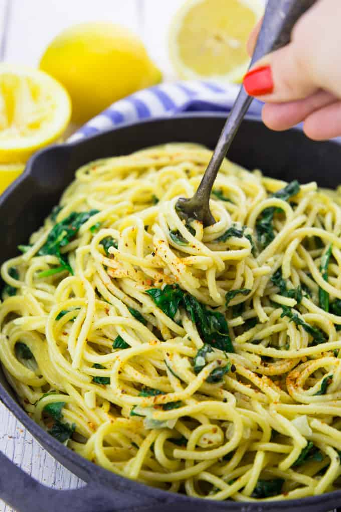

Lemon Spaghetti with Spinach

Description
This lemon spaghetti with spinach is the perfect recipe for busy weeknights! It’s a one pot meal, super delicious, comforting, and 100 % vegan! And it’s so creamy and has a deep lemon flavor.
Ingredients
- 1 onion, chopped
- 3 cloves of garlic, minced
- 2 1/2 cups vegetable broth
- 1 cup canned coconut milk (full fat)
- 9 oz spaghetti
- 3 cups fresh spinach
- lemon juice of 1/2 lemon
- 1 teaspoon lemon zest
- salt
- pepper
- red pepper flakes
Steps
- In a large pot, heat some oil and sauté the onion for 3 minutes until it becomes translucent. Then add the garlic and cook for another minute.
- Add the uncoooked spaghetti, the vegetable broth, the coconut milk, and the lemon juice. Stir a couple of times and gently push the spaghetti in the liquid when they're soft enough (this might take a couple of minutes. Try not to break them when they're still too hard). Cook for 15-18 minutes.
- When the spaghetti are al dente, stir in the spinach and the lemon zest. Cook for 2 more minutes and season with salt, pepper, and red pepper flakes. Enjoy!